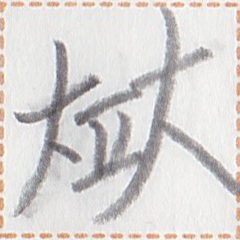
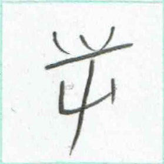
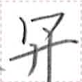
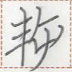
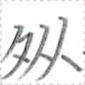
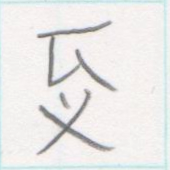
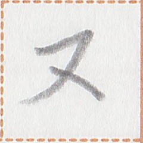

| 我 |  | 513 |
| 彼 |  | 432 |
| 之 |  | 360 |
| 此 |  | 336 |
| 於 |  | 331 |
| 在 |  | 312 |
| 行 |  | 300 |
| 言 |  | 266 |
| 心 |  | 252 |
| 汝 |  | 248 |
| 処 |  | 209 |
| 無 |  | 206 |
| 何 |  | 197 |
| 極 |  | 175 |
| 善 |  | 174 |
| 学 |  | 174 |
| 終 |  | 172 |
| 銭 |  | 140 |
| 人 |  | 139 |
| 等 |  | 130 |
| 識 |  | 116 |
| 乎 |  | 114 |
| 時 |  | 102 |
| 与 |  | 97 |
| 来 |  | 95 |
| 書 |  | 91 |
| 一 |  | 91 |
| 家 |  | 91 |
| 日 |  | 86 |
| 国 |  | 83 |
| 下 |  | 80 |
| 手 |  | 75 |
| 労 |  | 72 |
| 力 |  | 69 |
| 目 |  | 69 |
| 口 |  | 68 |
| 水 |  | 66 |
| 多 |  | 64 |
| 而 |  | 61 |
| 生 |  | 59 |
| 上 |  | 56 |
| 噫 |  | 51 |
| 使 |  | 51 |
| 友 |  | 48 |
| 子 |  | 48 |
| 須 |  | 48 |
| 筆 |  | 45 |
| 哩 |  | 45 |
| 風 |  | 43 |
| 星 |  | 43 |
| 牌 |  | 42 |
| 天 |  | 42 |
| 為 |  | 42 |
| 如 |  | 42 |
| 機 |  | 39 |
| 道 |  | 38 |
| 木 |  | 38 |
| 大 |  | 37 |
| 加 |  | 37 |
| 周 |  | 36 |
| 男 |  | 34 |
| 冠 |  | 34 |
| 全 |  | 34 |
| 茶 |  | 33 |
| 其 |  | 32 |
| 再 |  | 32 |
| 絵 |  | 31 |
| 二 |  | 31 |
| 別 |  | 31 |
| 火 |  | 31 |
| 車 |  | 29 |
| 小 |  | 29 |
| 入 |  | 28 |
| 女 |  | 27 |
| 果 |  | 27 |
| 甘 |  | 26 |
| 集 |  | 26 |
| 互 |  | 26 |
| 門 |  | 26 |
| 件 |  | 25 |
| 足 |  | 25 |
| 勿 |  | 24 |
| 真 |  | 24 |
| 故 |  | 23 |
| 硬 |  | 23 |
| 輩 |  | 23 |
| 闇 |  | 23 |
| 清 |  | 23 |
| 術 |  | 23 |
| 同 |  | 22 |
| 寝 |  | 22 |
| 衣 |  | 22 |
| 受 |  | 22 |
| 耳 |  | 21 |
| 父 |  | 21 |
| 地 |  | 21 |
| 字 |  | 21 |
| 種 |  | 20 |
| 神 |  | 20 |
| 律 |  | 20 |
| 犬 |  | 20 |
| 刀 |  | 19 |
| 淮 |  | 19 |
| 遊 |  | 18 |
| 即 |  | 18 |
| 戦 |  | 18 |
| 夏 |  | 18 |
| 長 |  | 18 |
| 川 |  | 18 |
| 物 |  | 18 |
| 助 |  | 18 |
| 激 |  | 17 |
| 声 |  | 17 |
| 倉 |  | 17 |
| 少 |  | 16 |
| 杯 |  | 16 |
| 片 |  | 16 |
| 母 |  | 16 |
| 始 |  | 16 |
| 十 |  | 16 |
| 雪 |  | 16 |
| 壊 |  | 15 |
| 机 |  | 15 |
| 急 |  | 15 |
| 付 |  | 14 |
| 魚 |  | 14 |
| 花 |  | 14 |
| 悪 |  | 14 |
| 享 |  | 14 |
| 草 |  | 14 |
| 酒 |  | 14 |
| 石 |  | 13 |
| 値 |  | 13 |
| 鳥 |  | 13 |
| 奮 |  | 12 |
| 箱 |  | 12 |
| 囲 |  | 12 |
| 訴 |  | 12 |
| 色 |  | 12 |
| 軟 |  | 12 |
| 失 |  | 11 |
| 春 |  | 11 |
| 新 |  | 11 |
| 席 |  | 11 |
| 美 |  | 11 |
| 蜜 |  | 11 |
| 怖 |  | 11 |
| 三 |  | 11 |
| 定 |  | 10 |
| 貧 |  | 10 |
| 体 |  | 10 |
| 琴 |  | 10 |
| 将 |  | 10 |
| 豊 |  | 10 |
| 百 |  | 9 |
| 立 |  | 9 |
| 開 |  | 9 |
| 唯 |  | 9 |
| 古 |  | 9 |
| 白 |  | 9 |
| 月 |  | 9 |
| 紙 |  | 9 |
| 龍 |  | 9 |
| 獣 |  | 9 |
| 笛 |  | 9 |
| 己 |  | 9 |
| 位 |  | 8 |
| 待 |  | 8 |
| 名 |  | 8 |
| 壁 |  | 8 |
| 止 |  | 8 |
| 満 |  | 8 |
| 錘 |  | 8 |
| 反 |  | 8 |
| 謎 |  | 8 |
| 傷 |  | 8 |
| 猫 |  | 8 |
| 皇 |  | 8 |
| 挽 |  | 8 |
| 四 |  | 8 |
| 高 |  | 8 |
| 米 |  | 7 |
| 守 |  | 7 |
| 混 |  | 7 |
| 亦 |  | 7 |
| 散 |  | 7 |
| 倒 |  | 7 |
| 常 |  | 7 |
| 官 |  | 7 |
| 船 |  | 7 |
| 軸 |  | 7 |
| 毎 |  | 7 |
| 端 |  | 6 |
| 震 |  | 6 |
| 論 |  | 6 |
| 閉 |  | 6 |
| 裁 |  | 6 |
| 或 |  | 6 |
| 島 |  | 6 |
| 圧 |  | 6 |
| 包 |  | 6 |
| 兵 |  | 6 |
| 引 |  | 6 |
| 族 |  | 6 |
| 馬 |  | 6 |
| 直 |  | 6 |
| 叮 |  | 6 |
| 塩 |  | 6 |
| 虫 |  | 5 |
| 毛 |  | 5 |
| 静 |  | 5 |
| 平 |  | 5 |
| 墨 |  | 5 |
| 寒 |  | 5 |
| 光 |  | 5 |
| 類 |  | 5 |
| 黒 |  | 5 |
| 撃 |  | 5 |
| 煙 |  | 4 |
| 層 |  | 4 |
| 哇 |  | 4 |
| 味 |  | 4 |
| 牛 |  | 4 |
| 遠 |  | 4 |
| 意 |  | 4 |
| 金 |  | 4 |
| 右 |  | 4 |
| 万 |  | 4 |
| 歌 |  | 4 |
| 㕮 |  | 4 |
| 嗅 |  | 4 |
| 卵 |  | 4 |
| 骨 |  | 3 |
| 積 |  | 3 |
| 叫 |  | 3 |
| 橋 |  | 3 |
| 季 |  | 3 |
| 冬 |  | 3 |
| 棚 |  | 3 |
| 従 |  | 3 |
| 王 |  | 3 |
| 左 |  | 3 |
| 試 |  | 3 |
| 謝 |  | 3 |
| 西 |  | 3 |
| 赤 |  | 3 |
| 穴 |  | 3 |
| 連 |  | 3 |
| 凹 |  | 3 |
| 羊 |  | 3 |
| 御 |  | 2 |
| 網 |  | 2 |
| 祭 |  | 2 |
| 筒 |  | 2 |
| 普 |  | 2 |
| 檸 |  | 2 |
| 後 |  | 2 |
| 広 |  | 2 |
| 八 |  | 2 |
| 肉 |  | 2 |
| 汪 |  | 2 |
| 笑 |  | 2 |
| 認 |  | 2 |
| 傾 |  | 2 |
| 東 |  | 2 |
| 青 |  | 2 |
| 秋 |  | 2 |
| 前 |  | 2 |
| 油 |  | 2 |
| 躍 |  | 2 |
| 山 |  | 2 |
| 虎 |  | 2 |
| 弓 |  | 2 |
| 六 |  | 2 |
| 五 |  | 2 |
| 樽 |  | 1 |
| 歪 |  | 1 |
| 咍 |  | 1 |
| 球 |  | 1 |
| 膠 |  | 1 |
| 血 |  | 1 |
| 糸 |  | 1 |
| 軽 |  | 1 |
| 覆 |  | 1 |
| 北 |  | 1 |
| 輪 |  | 1 |
| 文 |  | 1 |
| 硫 |  | 1 |
| 綿 |  | 1 |
| 形 |  | 1 |
| 南 |  | 1 |
| 民 |  | 1 |
| 貝 |  | 1 |
| 祖 |  | 1 |
| 鼓 |  | 1 |
| 俐 |  | 1 |
| 翰 |  | 1 |
| 哦 |  | 1 |
| 短 |  | 1 |
| 豆 |  | 1 |
| 羅 |  | 1 |
| 迷 |  | 1 |
| 九 |  | 1 |
| 正 |  | 1 |
| 七 |  | 1 |